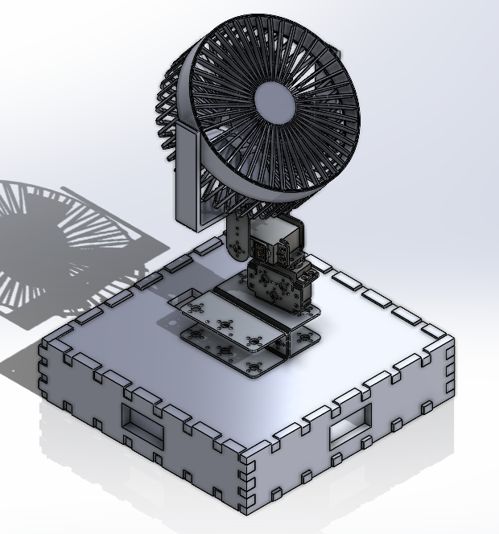
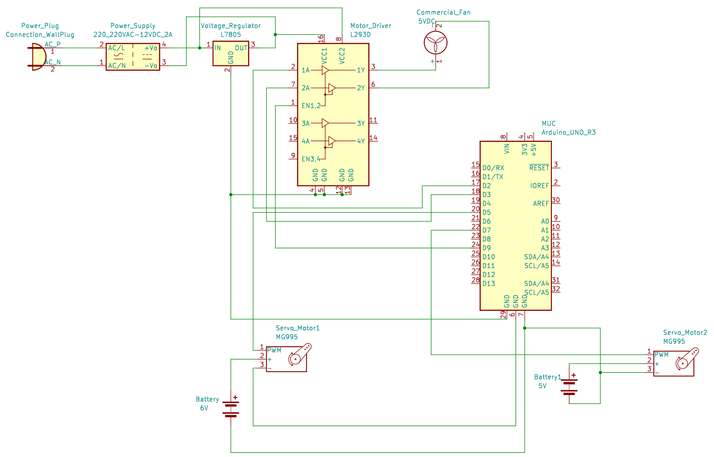

Smart Home Fan (2023)


Overview
This project involved designing and implementing an automated fan system for smart home environments.The fan is equipped with a camera-based tracking technology that detects and tracks individuals within a room, and it dynamically will adjust its orientation and speed based on movement and occupancy data. The project was meant to enhance energy efficiency and user comfort in smart home environments. This project required the integration of hardware components with software algorithms for motion tracking and control.

The camera used was a Logitech C920 webcam, which was interfaced with a laptop, Arduino microcontroller, a 12V DC motor controlled via an L293D motor driver, with additional protection provided by IN4007 diodes to guard against voltage spikes and back EMF. A pan and tilt mechanism for the fan was implemented using MG995 servo motors. The schematics were created using KiCad and prototyped on a Cytron Protoboard.

One of the challenges faced during the project was ensuring precise tracking and ensuring smooth motor control of the fan especially in varied lighting conditions and random occupancy. Using OpenCV, the system employs Haar Cascades for upper body detection, using the camera (capturing at 1920x1080 resolution with MJPEG encoding). Data is sent to the Arduino using UART protocol which then controls the servo motors. This data had to be buffered so as to average detections over a series of frames and extensive testing was conducted while adjusting the object detection parameters. The key was to reduce false positives and ensure the fan servo control was smooth.
For more details, you can view the full project on GitHub or download the project report:
Project information
- Category Mechatronic System Design
- Client Swinburne University of Technology
- Project date September 2023 - November 2023
- Project URL www.example.com
- Visit Website